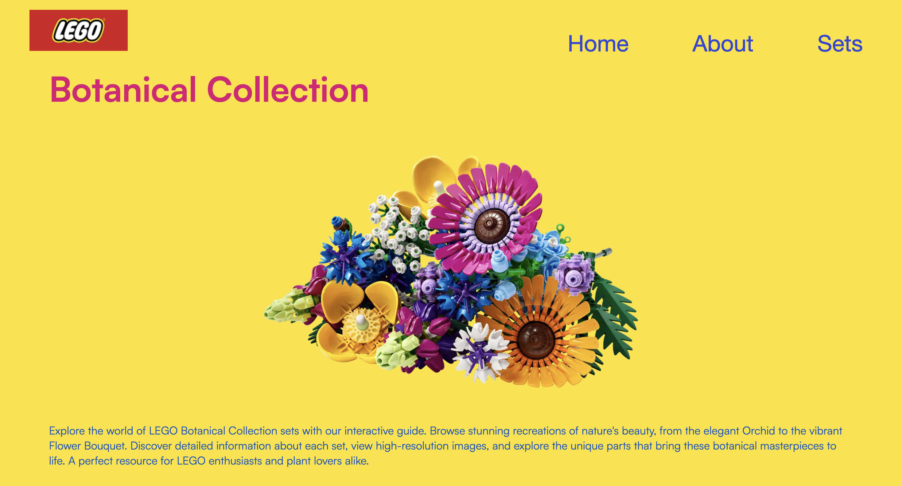
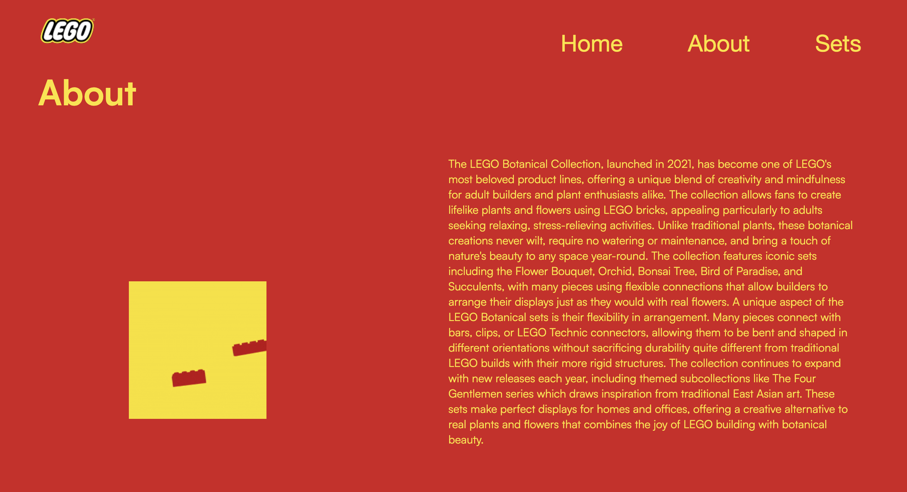
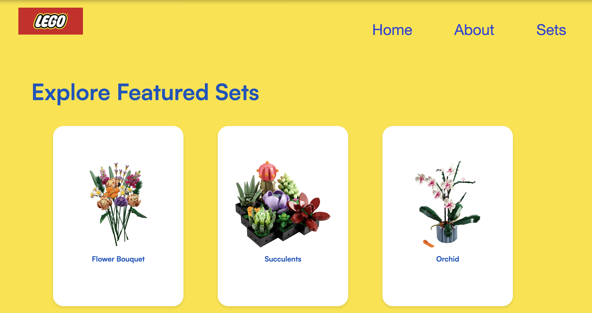
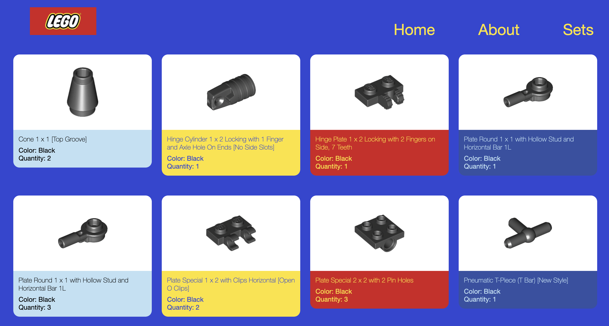

This project was created as the final assignment for CSE 204: Web Development. It’s a small web app that lets users explore LEGO’s botanical collection using real-time data from the Rebrickable API. Designed for LEGO fans, plant lovers, and curious coders, the site demonstrates how creativity and technical skills can come together to present data in an engaging, themed interface.
< Project Goals
Apply front-end development skills to a real-world API
Create a fun, content-rich browsing experience
Establish a scalable foundation for future features and improvements

< Tech Stack >
HTML & CSS: Used for page structure and visual styling
JavaScript: Powers dynamic behavior and API integration
Rebrickable API: Provides real-time data on LEGO botanical sets

< Features >
Real-time display of LEGO botanical sets with images, descriptions, and part counts
Individual set pages showing the year of release and total number of parts


< Future Improvements >
Rebuilding the site using a modern frontend framework like React or Vue
Adding filters (e.g. by year, part count, theme)
Implementing user favorites or bookmark functionality
Expanding set pages with additional info such as related sets or difficulty level